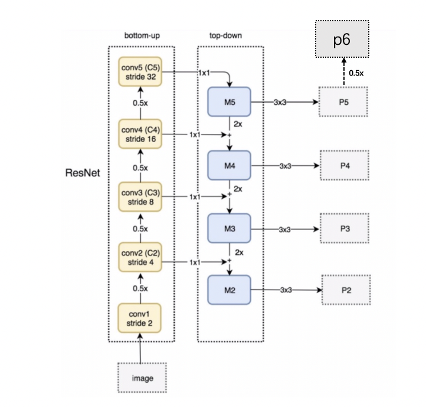
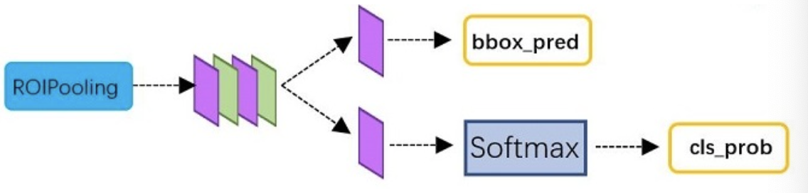

4.2 R-CNN系列网络¶
学习目标
- 了解Overfeat模型的移动窗口方法
- 了解RCNN目标检测的思想
- 了解fastRCNN目标检测的思想
- 熟悉FasterRCNN目标检测的思想
- 知道anchor的思想
- 掌握RPN网络是如何进行候选区域的生成的
- 掌握ROIPooling的使用方法
- 知道fasterRCNN的训练方法

1.Overfeat模型¶
Overfeat方法使用滑动窗口进行目标检测，也就是使用滑动窗口和神经网络来检测目标。滑动窗口使用固定宽度和高度的矩形区域，在图像上“滑动”，并将扫描结果送入到神经网络中进行分类和回归。
例如要检测汽车，就使用下图中红色滑动窗口进行扫描，将所有的扫描结果送入网络中进行分类和回归，得到最终的汽车的检测结果。
这种方法类似一种暴力穷举的方式，会消耗大量的计算力，并且由于窗口大小问题可能会造成效果不准确。
2.RCNN模型¶
在CVPR 2014年中Ross Girshick提出R-CNN网络，该网络不在使用暴力穷举的方法，而是使用候选区域方法（region proposal method），创建目标检测的区域来完成目标检测的任务，R-CNN是以深度神经网络为基础的目标检测的模型 ，以R-CNN为基点，后续的Fast R-CNN、Faster R-CNN模型都延续了这种目标检测思路。
2.1 算法流程¶
RCNN的检测流程如下图所示：
步骤是：
- 候选区域：使用选择性搜索的方法找出图片中可能存在目标的侯选区域region proposal
- 网络选择：选取预训练卷积神经网网络（AlexNet）用于进行特征提取。
- 目标分类：训练支持向量机（SVM）来辨别目标物体和背景。对每个类别，都要训练一个二元SVM。
- 目标定位：训练一个线性回归模型，为每个辨识到的物体生成更精确的边界框
我们通过一个具体的例子来展示这个流程：
- 选择一个图片进行目标检测：
- 利用选择性搜索获取候选区域
- 将这些候选区域进行变形，若是AlexNet将图片resize成227*227后送入到CNN网络中进行特征提取。
- 将CNN网络提取的特征结果送入到SVM中进行分类：
- 用线性回归的方法预测每个目标的边界框位置
这就是整个RCNN算法的流程。
【了解】选择性搜索（SelectiveSearch，SS）中，使用语义分割的方法，它通过在像素级的标注，把颜色、边界、纹理等信息作为合并条件，多尺度的综合采样方法，划分出一系列的区域，这些区域要远远少于传统的滑动窗口的穷举法产生的候选区域。
SelectiveSearch在一张图片上提取出来约2000个侯选区域，需要注意的是这些候选区域的长宽不固定。 而使用CNN提取候选区域的特征向量，需要接受固定长度的输入，所以需要对候选区域做一些尺寸上的修改。
2.2 算法总结¶
1、训练阶段多：步骤繁琐: 微调网络+训练SVM+训练边框回归器。
2、训练耗时：占用磁盘空间大：5000张图像产生几百G的特征文件。
3、处理速度慢: 使用GPU, VGG16模型处理一张图像需要47s。
4、图片形状变化：候选区域要经过crop/warp进行固定大小，无法保证图片不变形
3. Fast RCNN模型¶
考虑到R-CNN速度很慢, 提出了一个改善模型:Fast R-CNN。 相比R-CNN, Fast R-CNN的优点在于加快了selective search的步骤和同时训练分类和回归过程, 从整体上加快了速度。
Fast R-CNN对R-CNN的改进部分:
-
将R-CNN中三个模块(CNN, SVM, Regression)整合, 极大了减少了计算量和加快了速度
-
不对原始图像进行selective search提取, 而是先经过一次CNN, 在feature map上使用selective search生成候选区域进行映射, 并进行分类回归
-
为了兼容不同图片尺度, 使用了ROI Pooling 算法, 将特征图池化到固定维度的特征向量。
fastRCNN的工作流程描述如下：
- 输入图像：
- 图像被送入到卷积网络进行特征提取，将通过选择性搜索获取的候选区域映射到特征图中：
- 在特征图上Rol中应用RoIPooling，获取尺寸相同的特征向量
- 将这些区域传递到全连接的网络中进行分类和回归，得到目标检测的结果。
4.FasterRCNN模型¶
在R-CNN和Fast RCNN的基础上，Ross B. Girshick在2016年提出了Faster RCNN，在结构上，Faster RCNN已经将特征抽取(feature extraction)，proposal提取，bounding box regression(rect refine)，classification都整合在了一个网络中，使得综合性能有较大提高，在检测速度方面尤为明显。接下来我们给大家详细介绍fasterRCNN网络模型。网络基本结构如下图所示：

该网络主要可分为四部分：
- Backbone：backbone由一组卷积神经网络构成，Faster RCNN首先使用一组基础的conv+relu+pooling层提取图像中的特征，获取图像的特征图featuremaps。该feature maps被共享用于后续RPN层和全连接层。
- RPN网络：RPN网络用于生成候选区域region proposals。该部分通过softmax判断anchors属于positive或者negative，即是否包含目标，再利用bounding box regression修正anchors获得精确的proposals。
- Roi Pooling: 该部分收集输入图像的feature maps和proposals，综合信息后提取proposal的特征向量，送入后续全连接层判定目标类别和确定目标位置。
- Classifier: 该部分利用特征向量计算proposal的类别，并通过bounding box regression获得检测框最终的精确位置
将上述结构展开后如下所示，下图中特征提取网络是VGG16：
从上图中可以看出，对于一副任意大小PxQ的图像：
-
首先将图像缩放至固定大小MxN，然后将MxN图像送入网络；
-
而Conv layers中包含了13个conv层+13个relu层+4个pooling层，在这里使用VGG16网络进行特征提取，将最后的全连接层舍弃。在整个Conv layers中，conv和relu层不改变输入输出大小，只有pooling层使输出长宽都变为输入的½，一共有4个池化层，所以：
一个MxN大小的矩阵经过Conv layers固定变为(M/16)x(N/16）；
-
RPN网络首先经过3x3卷积，再分别生成positive anchors和对应bounding box regression偏移量，然后计算出proposals；
-
而Roi Pooling层则利用proposals从feature maps中提取proposal feature送入后续全连接网络中进行分类和回归。
接下来我们就从这四个方面来详细fasterRCNN网络并结合源码分析其实现过程。
4.1backbone¶
backbone一般为VGG，ResNet等网络构成，主要进行特征提取，将最后的全连接层舍弃，得到特征图进行后续处理。
在源码中我们使用ResNet + FPN 结构，来提取特征。普通的 FasterRCNN 只需要将 feature_map 输入到 rpn 网络生成 proposals 即可。但是由于加入 FPN，需要将多个 feature_map 逐个输入到 rpn 网络和检测网络中：
在这里ResNet和FPN的完整结构如下图所示，RPN输入的feature map是[p2,p3,p4,p5,p6] ，而作为后续目标检测网络FastRCNN的输入则是 [p2,p3,p4,p5] 。

那网络的整体架构表示成：
接下来我们分析下相关内容及源码：
4.1.1 ResNet¶
源码位置：fasterRCNN/detection/models/backbones/reset.py
1.瓶颈模块¶
要构建resnet网络首先构建瓶颈模块如下所示：
class _Bottleneck(tf.keras.Model):
"""
瓶颈模块的实现
"""
def __init__(self, filters, block,
downsampling=False, stride=1, **kwargs):
super(_Bottleneck, self).__init__(**kwargs)
# 获取三个卷积的卷积核数量
filters1, filters2, filters3 = filters
# 卷积层命名方式
conv_name_base = 'res' + block + '_branch'
# BN层命名方式
bn_name_base = 'bn' + block + '_branch'
# 是否进行下采样
self.downsampling = downsampling
# 卷积步长
self.stride = stride
# 瓶颈模块输出的通道数
self.out_channel = filters3
# 1*1 卷积
self.conv2a = layers.Conv2D(filters1, (1, 1), strides=(stride, stride),
kernel_initializer='he_normal',
name=conv_name_base + '2a')
# BN层
self.bn2a = layers.BatchNormalization(name=bn_name_base + '2a')
# 3*3 卷积
self.conv2b = layers.Conv2D(filters2, (3, 3), padding='same',
kernel_initializer='he_normal',
name=conv_name_base + '2b')
# BN层
self.bn2b = layers.BatchNormalization(name=bn_name_base + '2b')
# 1*1卷积
self.conv2c = layers.Conv2D(filters3, (1, 1),
kernel_initializer='he_normal',
name=conv_name_base + '2c')
# BN层
self.bn2c = layers.BatchNormalization(name=bn_name_base + '2c')
# 下采样
if self.downsampling:
# 在短连接处进行下采样
self.conv_shortcut = layers.Conv2D(filters3, (1, 1), strides=(stride, stride),
kernel_initializer='he_normal',
name=conv_name_base + '1')
# BN层
self.bn_shortcut = layers.BatchNormalization(name=bn_name_base + '1')
def call(self, inputs, training=False):
"""
定义前向传播过程
:param inputs:
:param training:
:return:
"""
# 第一组卷积+BN+Relu
x = self.conv2a(inputs)
x = self.bn2a(x, training=training)
x = tf.nn.relu(x)
# 第二组卷积+BN+Relu
x = self.conv2b(x)
x = self.bn2b(x, training=training)
x = tf.nn.relu(x)
# 第三组卷积+BN
x = self.conv2c(x)
x = self.bn2c(x, training=training)
# 短连接
if self.downsampling:
shortcut = self.conv_shortcut(inputs)
shortcut = self.bn_shortcut(shortcut, training=training)
else:
shortcut = inputs
# 相加求和
x += shortcut
# 激活
x = tf.nn.relu(x)
# 最终输出
return x
2. resnet¶
利用瓶颈模块构建backbone中的resNet.
class ResNet(tf.keras.Model):
"构建50或101层的resnet网络"
def __init__(self, depth, **kwargs):
super(ResNet, self).__init__(**kwargs)
# 若深度不是50或101报错
if depth not in [50, 101]:
raise AssertionError('depth must be 50 or 101.')
self.depth = depth
# padding
self.padding = layers.ZeroPadding2D((3, 3))
# 输入的卷积
self.conv1 = layers.Conv2D(64, (7, 7),
strides=(2, 2),
kernel_initializer='he_normal',
name='conv1')
# BN层
self.bn_conv1 = layers.BatchNormalization(name='bn_conv1')
# maxpooling
self.max_pool = layers.MaxPooling2D((3, 3), strides=(2, 2), padding='same')
# 第一组瓶颈模块
self.res2a = _Bottleneck([64, 64, 256], block='2a',
downsampling=True, stride=1)
self.res2b = _Bottleneck([64, 64, 256], block='2b')
self.res2c = _Bottleneck([64, 64, 256], block='2c')
# 第二组瓶颈模块：首个进行下采样
self.res3a = _Bottleneck([128, 128, 512], block='3a',
downsampling=True, stride=2)
self.res3b = _Bottleneck([128, 128, 512], block='3b')
self.res3c = _Bottleneck([128, 128, 512], block='3c')
self.res3d = _Bottleneck([128, 128, 512], block='3d')
# 第三组瓶颈模块：首个进行下采样
self.res4a = _Bottleneck([256, 256, 1024], block='4a',
downsampling=True, stride=2)
self.res4b = _Bottleneck([256, 256, 1024], block='4b')
self.res4c = _Bottleneck([256, 256, 1024], block='4c')
self.res4d = _Bottleneck([256, 256, 1024], block='4d')
self.res4e = _Bottleneck([256, 256, 1024], block='4e')
self.res4f = _Bottleneck([256, 256, 1024], block='4f')
# 若深度为101还需进行瓶颈模块的串联
if self.depth == 101:
self.res4g = _Bottleneck([256, 256, 1024], block='4g')
self.res4h = _Bottleneck([256, 256, 1024], block='4h')
self.res4i = _Bottleneck([256, 256, 1024], block='4i')
self.res4j = _Bottleneck([256, 256, 1024], block='4j')
self.res4k = _Bottleneck([256, 256, 1024], block='4k')
self.res4l = _Bottleneck([256, 256, 1024], block='4l')
self.res4m = _Bottleneck([256, 256, 1024], block='4m')
self.res4n = _Bottleneck([256, 256, 1024], block='4n')
self.res4o = _Bottleneck([256, 256, 1024], block='4o')
self.res4p = _Bottleneck([256, 256, 1024], block='4p')
self.res4q = _Bottleneck([256, 256, 1024], block='4q')
self.res4r = _Bottleneck([256, 256, 1024], block='4r')
self.res4s = _Bottleneck([256, 256, 1024], block='4s')
self.res4t = _Bottleneck([256, 256, 1024], block='4t')
self.res4u = _Bottleneck([256, 256, 1024], block='4u')
self.res4v = _Bottleneck([256, 256, 1024], block='4v')
self.res4w = _Bottleneck([256, 256, 1024], block='4w')
# 第四组瓶颈模块：首个进行下采样
self.res5a = _Bottleneck([512, 512, 2048], block='5a',
downsampling=True, stride=2)
self.res5b = _Bottleneck([512, 512, 2048], block='5b')
self.res5c = _Bottleneck([512, 512, 2048], block='5c')
# 输出通道数：C2,C3,C4,C5的输出通道数
self.out_channel = (256, 512, 1024, 2048)
def call(self, inputs, training=True):
"定义前向传播过程，每组瓶颈模块均输出结果"
x = self.padding(inputs)
x = self.conv1(x)
x = self.bn_conv1(x, training=training)
x = tf.nn.relu(x)
x = self.max_pool(x)
# 第1组瓶颈模块：输出c2
x = self.res2a(x, training=training)
x = self.res2b(x, training=training)
C2 = x = self.res2c(x, training=training)
# 第2组瓶颈模块:输出c3
x = self.res3a(x, training=training)
x = self.res3b(x, training=training)
x = self.res3c(x, training=training)
C3 = x = self.res3d(x, training=training)
# 第3组瓶颈模块:输出c4
x = self.res4a(x, training=training)
x = self.res4b(x, training=training)
x = self.res4c(x, training=training)
x = self.res4d(x, training=training)
x = self.res4e(x, training=training)
x = self.res4f(x, training=training)
if self.depth == 101:
x = self.res4g(x, training=training)
x = self.res4h(x, training=training)
x = self.res4i(x, training=training)
x = self.res4j(x, training=training)
x = self.res4k(x, training=training)
x = self.res4l(x, training=training)
x = self.res4m(x, training=training)
x = self.res4n(x, training=training)
x = self.res4o(x, training=training)
x = self.res4p(x, training=training)
x = self.res4q(x, training=training)
x = self.res4r(x, training=training)
x = self.res4s(x, training=training)
x = self.res4t(x, training=training)
x = self.res4u(x, training=training)
x = self.res4v(x, training=training)
x = self.res4w(x, training=training)
C4 = x
# 第4组瓶颈模块:输出c5
x = self.res5a(x, training=training)
x = self.res5b(x, training=training)
C5 = x = self.res5c(x, training=training)
# 返回所有的输出送入到fpn中
return (C2, C3, C4, C5)
4.1.2 fpn¶
FPN的作用是当前层的feature map会对未来层的feature map进行上采样，并加以利用。因为有了这样一个结构，当前的feature map就可以获得“未来”层的信息，这样的话低阶特征与高阶特征就有机融合起来了，提升检测精度。如下图所示：
整个架构中的结构如下图所示：
源码位置：fasterRCNN/detection/models/necks/fpn.py
class FPN(tf.keras.Model):
def __init__(self, out_channels=256, **kwargs):
'''
构建FPN模块：
out_channels:是输出特征图的通道数
'''
super(FPN, self).__init__(**kwargs)
# 输出通道数
self.out_channels = out_channels
# 使用1*1卷积对每个输入的特征图进行通道数调整
self.fpn_c2p2 = layers.Conv2D(out_channels, (1, 1),
kernel_initializer='he_normal', name='fpn_c2p2')
self.fpn_c3p3 = layers.Conv2D(out_channels, (1, 1),
kernel_initializer='he_normal', name='fpn_c3p3')
self.fpn_c4p4 = layers.Conv2D(out_channels, (1, 1),
kernel_initializer='he_normal', name='fpn_c4p4')
self.fpn_c5p5 = layers.Conv2D(out_channels, (1, 1),
kernel_initializer='he_normal', name='fpn_c5p5')
# 对深层的特征图进行上采样，使其与前一层的大小相同
self.fpn_p3upsampled = layers.UpSampling2D(size=(2, 2), name='fpn_p3upsampled')
self.fpn_p4upsampled = layers.UpSampling2D(size=(2, 2), name='fpn_p4upsampled')
self.fpn_p5upsampled = layers.UpSampling2D(size=(2, 2), name='fpn_p5upsampled')
# 3*3卷积，作用于融合后的特征图中得到最终的结果
self.fpn_p2 = layers.Conv2D(out_channels, (3, 3), padding='SAME',
kernel_initializer='he_normal', name='fpn_p2')
self.fpn_p3 = layers.Conv2D(out_channels, (3, 3), padding='SAME',
kernel_initializer='he_normal', name='fpn_p3')
self.fpn_p4 = layers.Conv2D(out_channels, (3, 3), padding='SAME',
kernel_initializer='he_normal', name='fpn_p4')
self.fpn_p5 = layers.Conv2D(out_channels, (3, 3), padding='SAME',
kernel_initializer='he_normal', name='fpn_p5')
# 对上一层的特征图进行下采样得到结果
self.fpn_p6 = layers.MaxPooling2D(pool_size=(1, 1), strides=2, name='fpn_p6')
def call(self, inputs, training=True):
# 定义前向传播过程
# 获取从resnet中得到的4个特征图
C2, C3, C4, C5 = inputs
# 对这些特征图进行1*1卷积和上采样后进行融合
P5 = self.fpn_c5p5(C5)
P4 = self.fpn_c4p4(C4) + self.fpn_p5upsampled(P5)
P3 = self.fpn_c3p3(C3) + self.fpn_p4upsampled(P4)
P2 = self.fpn_c2p2(C2) + self.fpn_p3upsampled(P3)
# 对融合后的特征图进行3*3卷积，得到最终的结果
P2 = self.fpn_p2(P2)
P3 = self.fpn_p3(P3)
P4 = self.fpn_p4(P4)
P5 = self.fpn_p5(P5)
# 对p5进行下采样得到p6特征图
P6 = self.fpn_p6(P5)
# 返回最终的结果
return [P2, P3, P4, P5, P6]
4.2 RPN网络¶
经典的检测方法生成检测框都非常耗时，如OpenCV adaboost使用滑动窗口+图像金字塔生成检测框；或如R-CNN使用选择性搜索方法生成检测框。而Faster RCNN则抛弃了传统的滑动窗口和SS方法，直接使用RPN生成候选区域，能极大提升检测速度。
RPN网络分为两部分，一部分是通过softmax分类判断anchor中是否包含目标，另一部分用于计算对于anchors的偏移量，以获得精确的候选区域。而最后的Proposal层则负责综合含有目标的anchors和对应bbox回归偏移量获取候选区域，同时剔除太小和超出边界的候选区域。
4.2.1 anchors¶
anchor在目标检测中表示 固定的参考框 ，首先预设一组不同尺度不同长宽比的固定参考框，覆盖几乎所有位置， 每个参考框负责检测与其交并比大于阈值 (训练预设值，常用0.5或0.7) 的目标 ，anchor技术将检测问题转换为 "这个固定参考框中有没有目标，目标框偏离参考框多远" ，不再需要多尺度遍历滑窗，真正实现了又好又快。
在fasterRCNN中框出多尺度、多种长宽比的anchors,多种尺度，每个特征图中的像素点多个框。如下图所示：
由于有 FPN 网络，所以会在多个特征图中生成anchor，假设某一个特征图大小为hxw，首先会计算这个特征相对于输入图像的下采样倍数 stride：
如下图所示：
在这里每一个特征图对应一个尺度的anchor。
源码中anchor的生成方法：fasterRCNN/detection/core/anchor/anchor_generator.py
主要方法是：
- _generate_level_anchors：通过广播的方法生成每一个特征图的anchorbox
- _generate_valid_flags：标记真实图像中的anchor
- generate_pyramid_anchors:调用上述两个方法完成图像的anchor的生成
class AnchorGenerator:
def __init__(self,
scales=(32, 64, 128, 256, 512),
ratios=(0.5, 1, 2),
feature_strides=(4, 8, 16, 32, 64)):
'''
初始化anchor
'''
# scales: 生成的anchor的尺度
self.scales = scales
# ratios: anchor的长宽比
self.ratios = ratios
# feature_strides: 因为fpn生成了五种特征图，在每一个特征图上移动一个位置相当于原图的大小
self.feature_strides = feature_strides
def generate_pyramid_anchors(self, img_metas):
'''
生成anchor
参数：
img_metas: [batch_size, 11]，图像的信息，包括原始图像的大小，resize的大小和输入到网络中图像的大小
返回：
anchors: [num_anchors, (y1, x1, y2, x2)] anchor的坐标，在原图像中的坐标
valid_flags: [batch_size, num_anchors] 是否为空的标志
'''
# 获取输入到网络中图像的大小：[1216, 1216]
pad_shape = calc_batch_padded_shape(img_metas)
# 获取图像的每一个特征图的大小：[(304, 304), (152, 152), (76, 76), (38, 38), (19, 19)]
feature_shapes = [(pad_shape[0] // stride, pad_shape[1] // stride)
for stride in self.feature_strides]
# 生成每一个特征图上anchor的位置信息： [277248, 4], [69312, 4], [17328, 4], [4332, 4], [1083, 4]
anchors = [
self._generate_level_anchors(level, feature_shape)
for level, feature_shape in enumerate(feature_shapes)
]
# 将所有的anchor串联在一个列表中：[369303, 4]
anchors = tf.concat(anchors, axis=0)
# 获取图像非0位置的大小：(800, 1067)
img_shapes = calc_img_shapes(img_metas)
# 获取anchor的非零标识
valid_flags = [
self._generate_valid_flags(anchors, img_shapes[i])
for i in range(img_shapes.shape[0])
]
# 堆叠为一个一维向量
valid_flags = tf.stack(valid_flags, axis=0)
# 停止梯度计算
anchors = tf.stop_gradient(anchors)
valid_flags = tf.stop_gradient(valid_flags)
# 返回anchor和对应非零标志
return anchors, valid_flags
def _generate_valid_flags(self, anchors, img_shape):
'''
移除padding位置的anchor
参数：
anchors: [num_anchors, (y1, x1, y2, x2)] 所有的anchor
img_shape: Tuple. (height, width, channels) 非0像素点的图像的大小
返回：
valid_flags: [num_anchors] 返回非0位置的anchor
'''
# 计算所有anchor的中心点坐标：[369300]
y_center = (anchors[:, 2] + anchors[:, 0]) / 2
x_center = (anchors[:, 3] + anchors[:, 1]) / 2
# 初始化flags为全1数组：[369300]
valid_flags = tf.ones(anchors.shape[0], dtype=tf.int32)
# 初始化相同大小的全0数组
zeros = tf.zeros(anchors.shape[0], dtype=tf.int32)
# 将anchor中心点在非0区域的置为1，其他置为0
valid_flags = tf.where(y_center <= img_shape[0], valid_flags, zeros)
valid_flags = tf.where(x_center <= img_shape[1], valid_flags, zeros)
# 返回标志结果
return valid_flags
def _generate_level_anchors(self, level, feature_shape):
'''生成fpn输出的某一个特征图的anchor
参数：
feature_shape: (height, width) 特征图大小
返回：
numpy.ndarray [anchors_num, (y1, x1, y2, x2)]：生成的anchor结果
'''
# 获取对应的尺度
scale = self.scales[level]
# 获取长宽比
ratios = self.ratios
# 获取对应步长
feature_stride = self.feature_strides[level]
# 获取不同长宽比下的scale
scales, ratios = tf.meshgrid([float(scale)], ratios)
# 尺度 [32, 32, 32]
scales = tf.reshape(scales, [-1])
# 长宽比 [0.5, 1, 2]
ratios = tf.reshape(ratios, [-1])
# 获取不同宽高比情况下的H和w
# [45, 32, 22]
heights = scales / tf.sqrt(ratios)
# [22, 32, 45]
widths = scales * tf.sqrt(ratios)
# 获取生成anchor对应的位置,假设步长为4时的结果： [0, 4, ..., 1216-4]
shifts_y = tf.multiply(tf.range(feature_shape[0]), feature_stride)
shifts_x = tf.multiply(tf.range(feature_shape[1]), feature_stride)
# 类型转换
shifts_x, shifts_y = tf.cast(shifts_x, tf.float32), tf.cast(shifts_y, tf.float32)
# 获取在图像中生成anchor的位置
shifts_x, shifts_y = tf.meshgrid(shifts_x, shifts_y)
# 将宽高分别相对于x,y进行广播， 得到宽高和中心点坐标
box_widths, box_centers_x = tf.meshgrid(widths, shifts_x)
box_heights, box_centers_y = tf.meshgrid(heights, shifts_y)
# 进行reshape得到anchor的中心点坐标和宽高
box_centers = tf.reshape(tf.stack([box_centers_y, box_centers_x], axis=2), (-1, 2))
box_sizes = tf.reshape(tf.stack([box_heights, box_widths], axis=2), (-1, 2))
# 拼接成一维向量，并以左上角和右下角坐标的形式表示 [304x304, 3, 4] => [277448, 4]
boxes = tf.concat([box_centers - 0.5 * box_sizes,
box_centers + 0.5 * box_sizes], axis=1)
# 返回最终的anchorbox
return boxes
那这些anchors是如何使用的呢？对于Conv layers特征提取得到的feature maps，为每一个点都分配这k个anchors作为初始的参考框，送入到softmax和全连接层中进行分类和回归，也就是一个二分类过程，判断anchor中是否包含目标，并对anchors进行修正。

4.2.2 RPN分类¶
一副MxN大小的矩阵送入Faster RCNN网络后，经过backbone特征提取到RPN网络变为HxW大小的特征图。如下图所示，是RPN进行分类的网络结构：(k=9)

先做一个1x1的卷积，得到[batchsize,H,W,18]的特征图，然后进行reshape,将特征图转换为[batchsize,9xH,W,2]的特征图后，送入softmax中进行分类，得到分类结果后，再进行reshape最终得到[batchsize,H,W,18]大小的结果,18表示k=9个anchor是否包含目标的概率值。
4.2.3 RPN回归¶
RPN回归的结构如下图所示：(k=9)

经过该卷积输出特征图为为[1, H, W,4x9]，这里相当于feature maps每个点都有9个anchors，每个anchors又都有4个用于回归的:

变换量。
该变换量预测的是anchor与真实值之间的平移量和尺度因子：
坐标变换的源码为：fasterRCNN/detection/core/bbox/transforms.py
def bbox2delta(box, gt_box, target_means, target_stds):
'''计算box到gtbox的修正值.
参数
box: [..., (y1, x1, y2, x2)] : 要修正的box
gt_box: [..., (y1, x1, y2, x2)] : GT值
target_means: [4] :均值
target_stds: [4]:方差
'''
# 转化为tensor
target_means = tf.constant(
target_means, dtype=tf.float32)
target_stds = tf.constant(
target_stds, dtype=tf.float32)
# 类型转换
box = tf.cast(box, tf.float32)
gt_box = tf.cast(gt_box, tf.float32)
# 获取box的中心点坐标和宽高
height = box[..., 2] - box[..., 0]
width = box[..., 3] - box[..., 1]
center_y = box[..., 0] + 0.5 * height
center_x = box[..., 1] + 0.5 * width
# 获取Gtbox的中心点坐标和宽高
gt_height = gt_box[..., 2] - gt_box[..., 0]
gt_width = gt_box[..., 3] - gt_box[..., 1]
gt_center_y = gt_box[..., 0] + 0.5 * gt_height
gt_center_x = gt_box[..., 1] + 0.5 * gt_width
# 计算两者之间的平移值和尺度变换
dy = (gt_center_y - center_y) / height
dx = (gt_center_x - center_x) / width
dh = tf.math.log(gt_height / height)
dw = tf.math.log(gt_width / width)
# 组成一维向量
delta = tf.stack([dy, dx, dh, dw], axis=-1)
# 标准化
delta = (delta - target_means) / target_stds
# 返回结果
return delta
RPN的分类和回归的源码如下：fasterRCNN/detection/models/rpn_heads/rpn_head.py
class RPNHead(tf.keras.Model):
"""
完成RPN网络中的相关操作
"""
def __init__(self,
anchor_scales=(32, 64, 128, 256, 512),
anchor_ratios=(0.5, 1, 2),
anchor_feature_strides=(4, 8, 16, 32, 64),
proposal_count=2000,
nms_threshold=0.7,
target_means=(0., 0., 0., 0.),
target_stds=(0.1, 0.1, 0.2, 0.2),
num_rpn_deltas=256,
positive_fraction=0.5,
pos_iou_thr=0.7,
neg_iou_thr=0.3,
**kwags):
'''
RPN网络结构，如下所示：
/ - rpn_cls 分类(1x1 conv)
输入 - rpn_conv 卷积(3x3 conv) -
\ - rpn_reg 回归(1x1 conv)
参数
anchor_scales: anchorbox的面积，相对于原图像像素的
anchor_ratios: anchorbox的长宽比
anchor_feature_strides: 生成anchor的步长，相对于原图像素的
proposal_count:RPN最后生成的候选区域的个数，经过非极大值抑制
nms_threshold: 对RPN生成的候选区域进行NMS的参数阈值
target_means: [4] Bounding box refinement mean.
target_stds: [4] Bounding box refinement standard deviation.
num_rpn_deltas: int.
positive_fraction: float.
pos_iou_thr: 与GT的IOU大于该值的anchor为正例
neg_iou_thr: 与GT的IOU小于该值的anchor为负例
'''
super(RPNHead, self).__init__(**kwags)
# 参数初始化
# RPN最后生成的候选区域的个数，经过非极大值抑制
self.proposal_count = proposal_count
# 对RPN生成的候选区域进行NMS的参数阈值
self.nms_threshold = nms_threshold
self.target_means = target_means
self.target_stds = target_stds
# 调用anchor生成器生成对应的anchor
self.generator = anchor_generator.AnchorGenerator(
scales=anchor_scales,
ratios=anchor_ratios,
feature_strides=anchor_feature_strides)
# 将anchor划分为正负样本
self.anchor_target = anchor_target.AnchorTarget(
target_means=target_means,
target_stds=target_stds,
num_rpn_deltas=num_rpn_deltas,
positive_fraction=positive_fraction,
pos_iou_thr=pos_iou_thr,
neg_iou_thr=neg_iou_thr)
# 设置RPN网络的分类和回归损失
self.rpn_class_loss = losses.rpn_class_loss
self.rpn_bbox_loss = losses.rpn_bbox_loss
# 3*3卷积
self.rpn_conv_shared = layers.Conv2D(512, (3, 3), padding='same',
kernel_initializer='he_normal',
name='rpn_conv_shared')
# 1*1卷积 分类 每一个anchor分为2类
self.rpn_class_raw = layers.Conv2D(len(anchor_ratios) * 2, (1, 1),
kernel_initializer='he_normal',
name='rpn_class_raw')
# 1*1卷积 回归 每一个anchor的回归结果
self.rpn_delta_pred = layers.Conv2D(len(anchor_ratios) * 4, (1, 1),
kernel_initializer='he_normal',
name='rpn_bbox_pred')
def call(self, inputs, training=True):
'''
定义前向传播过程
参数：
inputs: [batch_size, feat_map_height, feat_map_width, channels]
FPN输出的一个特征图
返回：
rpn_class_logits: [batch_size, num_anchors, 2] 分类结果，以logits表示
rpn_probs: [batch_size, num_anchors, 2] 分类结果，经softmax之后的概率表示形式
rpn_deltas: [batch_size, num_anchors, 4] 回归结果，anchor的位置信息
'''
# 输出结果
layer_outputs = []
# 遍历输入中的每一特征图
for feat in inputs:
# 3*3 卷积，假设特征图大小为：(1, 304, 304, 256)
shared = self.rpn_conv_shared(feat)
# 激活：(1, 304, 304, 256)
shared = tf.nn.relu(shared)
# 分类过程
# 1*1卷积：输出大小为(1, 304, 304, 6)
x = self.rpn_class_raw(shared)
# reshape:(1, 277248, 2)
rpn_class_logits = tf.reshape(x, [tf.shape(x)[0], -1, 2])
# softmax进行分类：(1, 277248, 2)，一共有277248个anchor，每个anchor有2个分类结果
rpn_probs = tf.nn.softmax(rpn_class_logits)
# 回归过程
# 1*1 卷积，输出大小为(1, 304, 304, 12)
x = self.rpn_delta_pred(shared)
# reshape:(1, 277248, 4),一共有277248个anchor，每个anchor有4个位置信息
rpn_deltas = tf.reshape(x, [tf.shape(x)[0], -1, 4])
# 将网络的分类和输出结果存放在layer_outputs
layer_outputs.append([rpn_class_logits, rpn_probs, rpn_deltas])
# 每一次迭代输出结果的大小为：
"""
(1, 277248, 2) (1, 277248, 2) (1, 277248, 4)
(1, 69312, 2) (1, 69312, 2) (1, 69312, 4)
(1, 17328, 2) (1, 17328, 2) (1, 17328, 4)
(1, 4332, 2) (1, 4332, 2) (1, 4332, 4)
(1, 1083, 2) (1, 1083, 2) (1, 1083, 4)
"""
# 将输出结果转换为列表
outputs = list(zip(*layer_outputs))
# 遍历输出，将不同特征图中同一类别的输出结果串联在一起
outputs = [tf.concat(list(o), axis=1) for o in outputs]
# 获取每一种输出：5个特征图的输出大小为：(1, 369303, 2) (1, 369303, 2) (1, 369303, 4)
rpn_class_logits, rpn_probs, rpn_deltas = outputs
# 返回输出结果
return rpn_class_logits, rpn_probs, rpn_deltas
4.2.4 Proposal Layer¶
Proposal Layer负责综合所有 变换量和包含目标的anchors，计算出候选区域proposal，送入后续RoI Pooling Layer。
Proposal Layer有3个输入：anchors分类器结果，对应的bbox reg的 变换量，以及im_info；另外还有参数feat_stride，用于计算anchor的步长。
Proposal Layer 完成以下处理：
- 生成anchors，利用
对所有的anchors做bbox regression回归
- 按照输入的positive softmax scores由大到小排序anchors，提取前pre_nms_topN(e.g. 6000)个anchors，即提取修正位置后的positive anchors
- 限定超出图像边界的positive anchors为图像边界，防止后续roi pooling时proposal超出图像边界。

-
剔除尺寸非常小的positive anchors
-
对剩余的positive anchors进行NMS（nonmaximum suppression）
-
Proposal Layer的输出是对应MxN输入图像尺度的坐标值[x1, y1, x2, y2]。
到此RPN网络的工作就结束了。
该部分的源码在：fasterRCNN/detection/models/rpn_heads/rpn_head.py
def _get_proposals_single(self,
rpn_probs,
rpn_deltas,
anchors,
valid_flags,
img_shape,
with_probs):
'''
计算候选区域结果
参数：
rpn_probs: [num_anchors] anchor是目标的概率值
rpn_deltas: [num_anchors, (dy, dx, log(dh), log(dw))] 回归得到的位置信息，对anchor进行修正
anchors: [num_anchors, (y1, x1, y2, x2)] anchor的位置
valid_flags: [num_anchors] anchor属于图像位置的标记信息
img_shape: np.ndarray. [2]. (img_height, img_width) 图像的大小
with_probs: bool. 是否输出分类结果
返回
proposals: 返回候选区域的列表
若with_probs = False，则返回：[num_proposals, (y1, x1, y2, x2)]
若with_probs = True，则返回：[num_proposals, (y1, x1, y2, x2, score)]
在这里num_proposals不会大于proposal_count
'''
# 图像的高宽
H, W = img_shape
# 将anchor的标记信息转换为布尔型, int => bool
valid_flags = tf.cast(valid_flags, tf.bool)
# 将无用的anchor过滤 ，并对分类和回归结果进行处理[369303] => [215169], respectively
rpn_probs = tf.boolean_mask(rpn_probs, valid_flags)
rpn_deltas = tf.boolean_mask(rpn_deltas, valid_flags)
anchors = tf.boolean_mask(anchors, valid_flags)
# 至多6000个结果会进行后续操作 min(6000, 215169) => 6000
pre_nms_limit = min(6000, anchors.shape[0])
# 获取至多6000个分类概率最高的anchor的索引
ix = tf.nn.top_k(rpn_probs, pre_nms_limit, sorted=True).indices
# 根据得到的索引值获取对应的分类，回归和anchor [215169] => [6000]
rpn_probs = tf.gather(rpn_probs, ix)
rpn_deltas = tf.gather(rpn_deltas, ix)
anchors = tf.gather(anchors, ix)
# 利用回归得到的结果对anchor进行修正, [6000, 4]
proposals = transforms.delta2bbox(anchors, rpn_deltas,
self.target_means, self.target_stds)
# 若修正后的结果超出图像范围则进行裁剪, [6000, 4]
window = tf.constant([0., 0., H, W], dtype=tf.float32)
proposals = transforms.bbox_clip(proposals, window)
# 对坐标值进行归一化, (y1, x1, y2, x2)
proposals = proposals / tf.constant([H, W, H, W], dtype=tf.float32)
# 进行NMS，获取最终大概2000个候选区域: [2000]
indices = tf.image.non_max_suppression(
proposals, rpn_probs, self.proposal_count, self.nms_threshold)
proposals = tf.gather(proposals, indices) # [2000, 4]
# 若要返回分类结果，则获取对应的分类值进行返回
if with_probs:
proposal_probs = tf.expand_dims(tf.gather(rpn_probs, indices), axis=1)
proposals = tf.concat([proposals, proposal_probs], axis=1)
# 返回候选区域
return proposals
4.3 ROIPooling¶
RoI Pooling层则负责收集proposal，并计算出 feature maps的候选区域，送入后续网络。

从网络架构中可以看出Rol pooling层有2个输入：
- CNN提取的feature maps
- RPN输出的候选区域proposal boxes（大小各不相同）
RoIpooling使用最大池化将任何有效的RoI区域内的特征转换成具有pool_H×pool_W的固定空间范围的小feature map，其中pool_H和pool_W是超参数，比如设置为7x7, 它们独立于任何特定的RoI,如下图所示21·
RoI Pooling 的作用过程，如下图所示：

- 由于RPN网络输出的proposal是对应MxN尺度的，所以首先使用spatial_scale参数将其映射回特征提取后（HxW）大小的feature map尺度；
- 再将每个proposal对应的feature map区域水平分为
的网格；
- 对网格的每一份都进行max pooling处理。
这样处理后，即使大小不同的proposal输出结果都是 固定大小，实现了固定长度输出,送入后续网络中进行处理。
在实现过程中，FPN网络产生了多个尺度特征图，那候选区域要映射到哪个特征图中呢？

在这里，不同尺度的ROI使用不同特征层作为ROI pooling层的输入，大尺度ROI就用后面一些的金字塔层，比如P5；小尺度ROI就用前面一点的特征层，比如P3，我们使用下面的公式确定ROI所在的特征层：

其中，224是ImageNet的标准输入，k0是基准值，设置为4，w和h是ROI区域的长和宽，假设ROI是112x112的大小，那么k = k0-1 = 4-1 = 3，意味着该ROI应该使用P3的特征层。k值会做取整处理，防止结果不是整数，而且为了保证k值在2-5之间，还会做截断处理。
源码在:fasterRCNN/detection/models/roi_extractors/roi_align.py
class PyramidROIAlign(tf.keras.layers.Layer):
def __init__(self, pool_shape, **kwargs):
'''
在多个特征图上完成ROIPooling
参数：
pool_shape: (height, width)指明pooling之后输出的大小
'''
super(PyramidROIAlign, self).__init__(**kwargs)
self.pool_shape = tuple(pool_shape)
def call(self, inputs, training=True):
# 获取输入中的roi区域，特征图和图像的元信息
rois_list, feature_map_list, img_metas = inputs
# 获取输入图像的大小
pad_shapes = calc_pad_shapes(img_metas)
# 图像的尺度：1216*1216
pad_areas = pad_shapes[:, 0] * pad_shapes[:, 1]
# 获取图像中ROI的类别data:[2000]
num_rois_list = [rois.shape.as_list()[0] for rois in rois_list]
# 获取图像中ROI的索引
roi_indices = tf.constant(
[i for i in range(len(rois_list)) for _ in range(rois_list[i].shape.as_list()[0])],
dtype=tf.int32
) #[0.....], shape:[2000]
# 获取对于每一个ROI的图像大小
areas = tf.constant(# range(1) range(2000)
[pad_areas[i] for i in range(pad_areas.shape[0]) for _ in range(num_rois_list[i])],
dtype=tf.float32
)#[1216*1216, 1216*1216,...], shape:[2000]
# ROI
rois = tf.concat(rois_list, axis=0) # [2000, 4]
# 获取每一个ROI对应的坐标和宽高
y1, x1, y2, x2 = tf.split(rois, 4, axis=1) # 4 of [2000, 1]
h = y2 - y1 # [2000, 1]
w = x2 - x1 # [2000, 1]
# 将每一个ROI分配到对应的特征图上
roi_level = tf.math.log( # [2000]
tf.sqrt(tf.squeeze(h * w, 1))
/ tf.cast((224.0 / tf.sqrt(areas * 1.0)), tf.float32)
) / tf.math.log(2.0)
roi_level = tf.minimum(5, tf.maximum( # [2000], clamp to [2-5]
2, 4 + tf.cast(tf.round(roi_level), tf.int32)))
# roi_level will indicates which level of feature to use
# 遍历所有的特征图，进行ROIpooling/ROIAlign
pooled_rois = []
roi_to_level = []
for i, level in enumerate(range(2, 6)): # 2,3,4,5
# 找到ROI对应的特征图尺度
ix = tf.where(tf.equal(roi_level, level))
# 获取到对应的ROI区域
level_rois = tf.gather_nd(rois, ix)
# 获取ROI对应的索引
level_roi_indices = tf.gather_nd(roi_indices, ix)
# Keep track of which roi is mapped to which level
roi_to_level.append(ix)
# 不进行梯度更新
level_rois = tf.stop_gradient(level_rois)
level_roi_indices = tf.stop_gradient(level_roi_indices)
# 进行ROI_align,是ROIpooling的改进版本(在MaskRCNN中介绍)
pooled_rois.append(tf.image.crop_and_resize(
feature_map_list[i], level_rois, level_roi_indices, self.pool_shape,
method="bilinear"))
[
# 将特征拼接在一起 [2000, 7, 7, 256]
pooled_rois = tf.concat(pooled_rois, axis=0)
# .....
# 获取 2000个候选区域 2000 of [7, 7, 256]
pooled_rois_list = tf.split(pooled_rois, num_rois_list, axis=0)
return pooled_rois_list
4.4 Classifier+Regression¶
Classifier+Regression部分利用获得的候选区域的特征图，通过全连接层与softmax计算每个候选区域proposal具体属于的类别（如人，车，电视等），输出cls_prob概率；同时再次利用bounding box regression获得每个proposal的位置偏移量bbox_pred，用于回归更加精确的目标检测框。Classifier部分网络结构如下所示：

从RoI Pooling获取到7x7=49大小的特征图后，送入后续网络，可以看到做了如下2件事：
- 通过全连接和softmax对proposals进行分类
- 再次对proposals进行bounding box regression，获取更高精度的rect box
源码如下：fasterRCNN/detection/models/bbox_heads/bbox_head.py
class BBoxHead(tf.keras.Model):
def __init__(self, num_classes,
pool_size=(7, 7),
target_means=(0., 0., 0., 0.),
target_stds=(0.1, 0.1, 0.2, 0.2),
min_confidence=0.7,
nms_threshold=0.3,
max_instances=100,
**kwags):
super(BBoxHead, self).__init__(**kwags)
# 类别个数
self.num_classes = num_classes
# ROIpooling的尺寸
self.pool_size = tuple(pool_size)
# 均值
self.target_means = target_means
# 标准差
self.target_stds = target_stds
# 最小的置信度
self.min_confidence = min_confidence
# NMS尺度
self.nms_threshold = nms_threshold
self.max_instances = max_instances
# 损失函数
self.rcnn_class_loss = losses.rcnn_class_loss
self.rcnn_bbox_loss = losses.rcnn_bbox_loss
# 分类卷积
self.rcnn_class_conv1 = layers.Conv2D(1024, self.pool_size,
padding='valid', name='rcnn_class_conv1')
# 分类BN
self.rcnn_class_bn1 = layers.BatchNormalization(name='rcnn_class_bn1')
# 分类卷积
self.rcnn_class_conv2 = layers.Conv2D(1024, (1, 1),
name='rcnn_class_conv2')
# BN层
self.rcnn_class_bn2 = layers.BatchNormalization(name='rcnn_class_bn2')
# 分类
self.rcnn_class_logits = layers.Dense(num_classes, name='rcnn_class_logits')
# 回归
self.rcnn_delta_fc = layers.Dense(num_classes * 4, name='rcnn_bbox_fc')
def call(self, inputs, training=True):
'''
参数：
pooled_rois_list: List of [num_rois, pool_size, pool_size, channels] rpn生成的候选区域
返回：
rcnn_class_logits_list: [num_rois, num_classes] 分类的logits
rcnn_probs_list: List of [num_rois, num_classes] 分类的损失
rcnn_deltas_list: List of [num_rois, num_classes, (dy, dx, log(dh), log(dw))] 回归结果
'''
pooled_rois_list = inputs
num_pooled_rois_list = [pooled_rois.shape[0] for pooled_rois in pooled_rois_list]
pooled_rois = tf.concat(pooled_rois_list, axis=0)
# 卷积+BN+relu
x = self.rcnn_class_conv1(pooled_rois)
x = self.rcnn_class_bn1(x, training=training)
x = tf.nn.relu(x)
# 卷积+BN+relu
x = self.rcnn_class_conv2(x)
x = self.rcnn_class_bn2(x, training=training)
x = tf.nn.relu(x)
# flatten
x = tf.squeeze(tf.squeeze(x, 2), 1)
# 分类结果
logits = self.rcnn_class_logits(x)
# 分类概率
probs = tf.nn.softmax(logits)
# 回归结果
deltas = self.rcnn_delta_fc(x)
deltas = tf.reshape(deltas, (-1, self.num_classes, 4))
# 分类logits
rcnn_class_logits_list = tf.split(logits, num_pooled_rois_list, 0)
# 分类概率
rcnn_probs_list = tf.split(probs, num_pooled_rois_list, 0)
# 回归结果
rcnn_deltas_list = tf.split(deltas, num_pooled_rois_list, 0)
# 结果返回
return rcnn_class_logits_list, rcnn_probs_list, rcnn_deltas_list
到这我们就完成了整个网络的介绍。
4.5 FasterRCNN的训练¶
Faster R-CNN的训练分为两部分，即RPN网络和检测网络fastRCNN的训练：
整个训练过程分为四步：
- 第一步：RPN网络的训练，使用ImageNet预训练的模型初始化，并端到端微调用于区域建议任务。
- 第二步：利用第一步的RPN生成的建议框，由Fast R-CNN训练一个单独的检测网络，这个检测网络同样是由ImageNet预训练的模型初始化的，这时候两个网络还没有共享卷积层。
- 第三步：用检测网络初始化RPN训练，但是固定共享的卷积层，并且只微调RPN独有的层，现在两个网络共享卷积层了。
- 第四步：保持共享的卷积层固定，微调Fast R-CNN的fc层。这样，两个网络共享相同的卷积层，构成一个统一的网络。
接下来我们分别介绍各个训练步骤：
4.5.1 RPN网络的训练¶
RPN网络的作用从众多的anchors中提取包含目标的，并且经过回归调整的候选区域。为了训练RPN，给每个anchor分配是否包含目标的标签，也就是正负样本的标记，然后进行训练。
1、正负样本标记¶
- 与真实框ground truth（GT）交并比IOU大于0.7的anchor是正样本，即anchor中包含目标
- 与真实框ground truth（GT）交并比IOU小于0.3的anchor是负样本，即anchor中不包含目标
- 其他的anchor舍弃，不参与网络的训练
该部分源码在：fasterRCNN/detection/core/anchor/anchor_target.py
def _build_single_target(self, anchors, valid_flags, gt_boxes, gt_class_ids):
'''
计算每幅图像的目标值
参数：
anchors: [num_anchors, (y1, x1, y2, x2)] anchor的位置信息
valid_flags: [num_anchors] anchor的表示
gt_class_ids: [num_gt_boxes] 真实值的类别
gt_boxes: [num_gt_boxes, (y1, x1, y2, x2)] 真实框的位置
返回：
target_matchs: [num_anchors] anchor是正负样本
target_deltas: [num_rpn_deltas, (dy, dx, log(dh), log(dw))]
'''
# 删除为0的真实框
gt_boxes, _ = trim_zeros(gt_boxes)
# 初始化全0数组，存储anchor的分类结果
target_matchs = tf.zeros(anchors.shape[0], dtype=tf.int32)
# 计算anchor与gt之间的交并比 326393 vs 10 => [326393, 10]
overlaps = geometry.compute_overlaps(anchors, gt_boxes)
# 1.设置负样本
# 获取每一个anchor与各个GT交并比的最大值及其索引
anchor_iou_argmax = tf.argmax(overlaps, axis=1)
anchor_iou_max = tf.reduce_max(overlaps, axis=[1])
# 选择 IOU < 0.3 的 anchor 为 background，标签为 -1
target_matchs = tf.where(anchor_iou_max < self.neg_iou_thr,
-tf.ones(anchors.shape[0], dtype=tf.int32), target_matchs)
# 过滤掉pad区域的anchor
target_matchs = tf.where(tf.equal(valid_flags, 1),
target_matchs, tf.zeros(anchors.shape[0], dtype=tf.int32))
# 2、选择 IOU > 0.7 的 anchor 为 foreground，标签为 1
target_matchs = tf.where(anchor_iou_max >= self.pos_iou_thr,
tf.ones(anchors.shape[0], dtype=tf.int32), target_matchs)
# 3、为每一GT分配一个anchor：不考虑IOU的大小
# 选择与每一个GT交并比最大的anchor索引 ：[N_gt_boxes]
gt_iou_argmax = tf.argmax(overlaps, axis=0)
# 将交并比最大的设置为正样本
target_matchs = tf.compat.v1.scatter_update(tf.Variable(target_matchs), gt_iou_argmax, 1)
# 采样获取正负样本，主要不要使正样本比例超过一半
# [N_pos_anchors, 1], [15, 1]
ids = tf.where(tf.equal(target_matchs, 1))
# 压缩成一个一维向量 [15]
ids = tf.squeeze(ids, 1)
# 计算真实正样本个数与所需样本个数之间的差值
extra = ids.shape.as_list()[0] - int(self.num_rpn_deltas * self.positive_fraction)
# 若差值大于0，说明有足够的正样本
if extra > 0:
# 将多余的正样本的标识置为0
ids = tf.random.shuffle(ids)[:extra]
target_matchs = tf.compat.v1.scatter_update(target_matchs, ids, 0)
# 获取负样本
ids = tf.where(tf.equal(target_matchs, -1)) # [213748, 1]
ids = tf.squeeze(ids, 1)
# 获取负样本个数与所需负样本个数之间的差值
extra = ids.shape.as_list()[0] - (self.num_rpn_deltas -
tf.reduce_sum(tf.cast(tf.equal(target_matchs, 1), tf.int32)))
# 若差值大于0，则说明有足够的负样本
if extra > 0:
# 将多余的负样本置为0
ids = tf.random.shuffle(ids)[:extra]
target_matchs = tf.compat.v1.scatter_update(target_matchs, ids, 0)
# 这时我们就有256个anchor,分别包含正负样本.
# 对于每一个正样本，计算其对应的坐标修正值
# 获取正样本的索引
ids = tf.where(tf.equal(target_matchs, 1)) # [15]
# 获取正样本的anchor
a = tf.gather_nd(anchors, ids)
# 获取anchor对应的gt的index
anchor_idx = tf.gather_nd(anchor_iou_argmax, ids)
# 获取gt
gt = tf.gather(gt_boxes, anchor_idx)
# 计算anchor到gt的修正坐标。
target_deltas = transforms.bbox2delta(
a, gt, self.target_means, self.target_stds)
# 获取负样本的个数
padding = tf.maximum(self.num_rpn_deltas - tf.shape(target_deltas)[0], 0)
# 目标值，正样本的目标值是偏移，负样本的目标值是0
target_deltas = tf.pad(target_deltas, [(0, padding), (0, 0)])
return target_matchs, target_deltas
2、RPN网络的损失函数¶
RPN网络的损失函数是：
其中
-
i表示anchor的索引
-
p_i是第i个anchor 预测为目标的可能性，p_i^{*}为ground-truth标签。如果这个anchor是positive的，则ground-truth标签为1，否则为0。（即当第i个anchor与GT间IoU>0.7，认为是该anchor是positive，标签为1；反之IoU<0.3时，认为是该anchor是negative，标签为0）
-
t_i表示表示正样本anchor到预测区域bounding box的4个参数化预测结果,t_i^{*}是这个positive anchor对应的ground-truth box的偏移，如下所示：
预测值：

真实值：
其中，x，y，w，h表示窗口中心坐标和窗口的宽度和高度，变量x， x_a 和x^{*} 分别表示预测窗口、anchor窗口和Ground Truth的坐标（y，w，h同理）
整个Loss分为两部分：分类和回归的损失
- L_{cls}分类的损失（classification loss），是一个二分类器的softmax loss。
- L_{reg}是回归损失，为smooth(x)损失,并且只有正样本才参与回归损失计算
- N_{cls}和N_{reg}分别用来标准化分类损失项L_{cls}和回归损失项L_{reg}，默认用batch size设置N_{cls}，用anchor位置数目~2000初始化N_{reg}
- N_{cls}和N_{reg}相差过大，用参数λ来平衡两者，一般取值为N_{reg}和N_{cls}的比值10即可。
分类损失实现：fasterRCNN/detection/core/loss/losses.py
def rpn_class_loss(target_matchs, rpn_class_logits):
'''RPN分类损失
参数：
target_matchs: [batch_size, num_anchors]. anchor的标记信息. 1=positive,
-1=negative, 0=neutral anchor.
rpn_class_logits: [batch_size, num_anchors, 2]. RPN的分类结果 FG/BG.
'''
# 获取anchor的分类标记信息. 将 -1/+1 转换为 0/1 值
anchor_class = tf.cast(tf.equal(target_matchs, 1), tf.int32)
# 正负样本对损失都有贡献，获取正负样本的索引
indices = tf.where(tf.not_equal(target_matchs, 0))
# 获取正负样本对应的预测值
rpn_class_logits = tf.gather_nd(rpn_class_logits, indices)
# 获取正负样本对应的真实累呗
anchor_class = tf.gather_nd(anchor_class, indices)
# 获取类别个数
num_classes = rpn_class_logits.shape[-1]
# 计算交叉熵损失结果
loss = keras.losses.categorical_crossentropy(tf.one_hot(anchor_class, depth=num_classes),
rpn_class_logits, from_logits=True)
# 求平均
loss = tf.reduce_mean(loss) if tf.size(loss) > 0 else tf.constant(0.0)
# 返回loss值
return loss
回归损失：
def rpn_bbox_loss(target_deltas, target_matchs, rpn_deltas):
'''
rpn损失的回归结果
参数：
target_deltas: [batch, num_rpn_deltas, (dy, dx, log(dh), log(dw))].
target_matchs: [batch, anchors]. Anchor match type. 1=positive,
-1=negative, 0=neutral anchor.
rpn_deltas: [batch, anchors, (dy, dx, log(dh), log(dw))]
'''
def batch_pack(x, counts, num_rows):
# 获取指定的位置的值
outputs = []
for i in range(num_rows):
outputs.append(x[i, :counts[i]])
return tf.concat(outputs, axis=0)
# 只有正样本计算损失，获取正样本的索引
indices = tf.where(tf.equal(target_matchs, 1))
# 获取正样本对应的预测值
rpn_deltas = tf.gather_nd(rpn_deltas, indices)
# 获取正样本的个数
batch_counts = tf.reduce_sum(tf.cast(tf.equal(target_matchs, 1), tf.int32), axis=1)
# 获取正样本对应的目标值
target_deltas = batch_pack(target_deltas, batch_counts,
target_deltas.shape.as_list()[0])
# 计算smoothL1损失
loss = smooth_l1_loss(target_deltas, rpn_deltas)
# 计算均值
loss = tf.reduce_mean(loss) if tf.size(loss) > 0 else tf.constant(0.0)
# 返回损失
return loss
3、训练过程¶
在训练时每次迭代的正负样本是由一幅图像的正负样本组成的：
- 随机采样256个anchor，计算损失函数，其中采样的正负anchor的比例是1:1。
- 通过从零均值标准差为0.01的高斯分布中获取的权重来随机初始化所有新层（最后一个卷积层其后的层），所有其他层（即共享的卷积层）是通过对ImageNet分类预训练的模型来初始化的
- 采用带动量的随机梯度下降算法对网络进行训练
4.5.2 FastRCNN网络的训练¶
使用RPN网络收集到的候选区域和imageNet预训练的卷积网络提取的特征对检测的FastRCNN网络进行训练。
1.正负样本标记¶
在FastRCNN网络训练时：
- 首先将与真实框ground truth（GT）交并比IOU大于0.5的候选区域设为正样本
- 将与真实框ground truth（GT）交并比IOU小于0.5的候选区域设为负样本
正负样本的分配如下所示：fasterRCNN/detection/core/bbox/bbox_target.py
def _build_single_target(self, proposals, gt_boxes, gt_class_ids, img_shape):
'''
生成一幅图像中的正负样本
参数：
proposals: [num_proposals, (y1, x1, y2, x2)] rpn网络生成的候选区域：归一化坐标
gt_boxes: [num_gt_boxes, (y1, x1, y2, x2)] 图像中真实值，bbox的坐标值，图像坐标
gt_class_ids: [num_gt_boxes] 图像中的gt对应的类别
img_shape: np.ndarray. [2]. (img_height, img_width) 图像的大小
返回：
rois: [num_rois, (y1, x1, y2, x2)] 候选区域的归一化坐标
target_matchs: [num_positive_rois] 采样后候选区域的类别
target_deltas: [num_positive_rois, (dy, dx, log(dh), log(dw))] 采样后候选区域的目标值
'''
# 图像的大小
H, W = img_shape # 1216, 1216
# 移除0值 [7, 4]
gt_boxes, non_zeros = trim_zeros(gt_boxes)
# 获取GT对应的类别
gt_class_ids = tf.boolean_mask(gt_class_ids, non_zeros) # [7]
# 归一化 (y1, x1, y2, x2) => 0~1
gt_boxes = gt_boxes / tf.constant([H, W, H, W], dtype=tf.float32)
# 计算候选区域和真实框之间的交并比：[2k, 4] with [7, 4] => [2k, 7]
overlaps = geometry.compute_overlaps(proposals, gt_boxes)
# 获取每一个候选区域最相似的gtbox的索引[2000]
anchor_iou_argmax = tf.argmax(overlaps, axis=1)
# 获取每一个候选区域与最相似的gtbox的交并比[2000]
roi_iou_max = tf.reduce_max(overlaps, axis=1)
# 获取正样本的索引[2000]=>[48, 1] =>[48]
positive_roi_bool = (roi_iou_max >= self.pos_iou_thr)
positive_indices = tf.where(positive_roi_bool)[:, 0]
# 获取负样本的索引
negative_indices = tf.where(roi_iou_max < self.neg_iou_thr)[:, 0]
# 对获取的ROI区域进行下采样
# 需要的正样本个数，通过比例计算
positive_count = int(self.num_rcnn_deltas * self.positive_fraction)
# 将正样本打乱，进行截取
positive_indices = tf.random.shuffle(positive_indices)[:positive_count]
# 正样本的个数
positive_count = tf.shape(positive_indices)[0]
# 负样本，保证正样本的比例
r = 1.0 / self.positive_fraction
# 计算样本总数并减去正样本个数，即为负样本个数
negative_count = tf.cast(r * tf.cast(positive_count, tf.float32), tf.int32) - positive_count
# 获取负样本
negative_indices = tf.random.shuffle(negative_indices)[:negative_count]
# 选取正负样本的候选区域
positive_rois = tf.gather(proposals, positive_indices)
negative_rois = tf.gather(proposals, negative_indices)
# 为选取的候选区域分配目标值，获取正样本与GT的交并比
positive_overlaps = tf.gather(overlaps, positive_indices)
# 获取与每一个候选区域最相似的GT
roi_gt_box_assignment = tf.argmax(positive_overlaps, axis=1)
# 将GT的坐标和类别分配给对应的候选区域
roi_gt_boxes = tf.gather(gt_boxes, roi_gt_box_assignment)
target_matchs = tf.gather(gt_class_ids, roi_gt_box_assignment)
# 将坐标转换为修正值
target_deltas = transforms.bbox2delta(positive_rois, roi_gt_boxes, self.target_means, self.target_stds)
# 将正负样本拼接在一起
rois = tf.concat([positive_rois, negative_rois], axis=0)
# 获取负样本的数量
N = tf.shape(negative_rois)[0]
# 将负样本类别设为0
target_matchs = tf.pad(target_matchs, [(0, N)])
# 停止梯度更新
target_matchs = tf.stop_gradient(target_matchs)
target_deltas = tf.stop_gradient(target_deltas)
# 返回结果
return rois, target_matchs, target_deltas
2.FastRCNN的损失函数¶
FastRCNN的输出由两部分组成：一部分是softmax层进行分类，输出类别有K个类别加上”背景”类，另一部分是回归bounding box regressor。也就是：
- 一部分输出在K+1个类别上的离散概率分布（每个候选区域），p=(p0,p1,...,pk)。通常，通过全连接层的K+1个输出上的Softmax来计算p。
- 另一部分输出对于由K个类别中的每一个检测框回归偏移，t^{k}=(t_{x}^{k},t_{y}^{k},t_{w}^{k},t_{h}^{k})。其中t_k指定相对于候选框的尺度不变转换和对数空间高度/宽度移位，与在RPN网络中是一样的。
每个训练的候选区域用 分类目标值u和检测框回归目标值v标记 。背景样本用u=0来表示，对每个标记的候选区域使用多任务损失L以联合训练分类和检测框回归：

其中L_{cls}(p, u) = -\log p_u，表示交叉熵损失，第二个损失L_{loc}，是定义目标值和预测检测框的四元组之间的损失使用smoothL1损失计算，同样是只有正样本（非背景）的候选区域才计算回归损失，参数λ设为1。
损失函数的源码如下所示：fasterRCNN/detection/core/loss/losses.py
def rcnn_class_loss(target_matchs_list, rcnn_class_logits_list):
'''FastRCNN的分类损失
参数：
target_matchs_list: [num_rois]. 正样本的候选区域
rcnn_class_logits_list: list of [num_rois, num_classes] 分类结果
'''
# 增加背景类的类别
class_ids = tf.concat(target_matchs_list, 0)
# 背景类的分数
class_logits = tf.concat(rcnn_class_logits_list, 0)
# 类型转换
class_ids = tf.cast(class_ids, 'int64')
# 获取类别总数
num_classes = class_logits.shape[-1]
# 计算交叉熵损失函数
loss = keras.losses.categorical_crossentropy(tf.one_hot(class_ids, depth=num_classes),
class_logits, from_logits=True)
# 求平均：大于0返回结果，其他返回0
loss = tf.reduce_mean(loss) if tf.size(loss) > 0 else tf.constant(0.0)
return loss
def rcnn_bbox_loss(target_deltas_list, target_matchs_list, rcnn_deltas_list):
'''FastRCNN的回归损失
参数：
target_deltas_list: [num_positive_rois, (dy, dx, log(dh), log(dw))] 正样本对应的真实值
target_matchs_list: list of [num_rois]. 正样本对应的类别
rcnn_deltas_list: list of [num_rois, num_classes, (dy, dx, log(dh), log(dw))] 网络返回的结果
'''
# 其他结果为0
target_deltas = tf.concat(target_deltas_list, 0)
target_class_ids = tf.concat(target_matchs_list, 0)
rcnn_deltas = tf.concat(rcnn_deltas_list, 0)
# 只有正样本参与损失计算，并且只有类别预测正确才获取其索引
# 获取非背景类的结果
positive_roi_ix = tf.where(target_class_ids > 0)[:, 0]
# 将类别和回归结果合并在一起
positive_roi_class_ids = tf.cast(
tf.gather(target_class_ids, positive_roi_ix), tf.int64)
# 获取索引
indices = tf.stack([positive_roi_ix, positive_roi_class_ids], axis=1)
# 获取正样本预测结果
rcnn_deltas = tf.gather_nd(rcnn_deltas, indices)
# 计算Smooth-L1损失
loss = smooth_l1_loss(target_deltas, rcnn_deltas)
# 平均：size>0返回结果，否则返回0
loss = tf.reduce_mean(loss) if tf.size(loss) > 0 else tf.constant(0.0)
return loss
3.训练过程¶
FastRCNN的训练采用多张图片进行训练，获取每张图片中的正负样本：
- 对所有正样本根据IOU值进行排序，每张图片取前64个区域，将这些区域的坐标保存下来，作为该图片的训练样本
- 用于Softmax分类和检测框回归的全连接层的权重分别使用具有方差0.01和0.001的零均值高斯分布初始化，偏置初始化为0，特征提取网络使用ImageNet的预训练网络
- 使用梯度下降算法进行优化
4.5.3 共享卷积训练¶
用fastRCNN检测网络初始化RPN训练，但是固定共享的卷积层，并且只微调RPN独有的层，现在两个网络共享卷积层了，接下来保持共享的卷积层固定，微调Fast R-CNN的fc层。这样，RPN网络和Fast R-CNN网络共享相同的卷积层，构成一个统一的网络。
Faster R-CNN还有一种end-to-end的训练方式，可以一次完成完成，将RPN loss与Fast RCNN loss相加，然后进行梯度下降优化，更新参数。
总结
- 了解Overfeat模型的移动窗口方法
滑动窗口使用固定宽度和高度的矩形区域，可以在图像上“滑动”，并将扫描送入到神经网络中进行分类和回归。
- 了解RCNN目标检测的思想
R-CNN网络使用候选区域方法（region proposal method），利用CNN网络提取特征，SVM完成分类，线性回归进行bbox的修正
- 了解fastRCNN目标检测的思想
利用CNN网络进行特征提取，利用SS生成候选区域，进行映射，并使用ROIpooling进行维度调整，最后进行分类和回归
- 熟悉FasterRCNN目标检测的思想
利用CNN网络进行特征提取，利用RPN生成候选区域，最后进行分类和回归
- 知道anchor的思想
anchor技术将检测问题转换为**"这个固定参考框中有没有目标，目标框偏离参考框多远"**，不再需要多尺度遍历滑窗
- 掌握RPN网络是如何进行候选区域的生成的
通过softmax判断anchors属于positive或者negative，再利用bounding box regression修正anchors获得精确的proposals
- 掌握ROIPooling的使用方法
RoIpooling使用最大池化将任何有效的RoI区域内的特征转换成具有H×W的固定空间范围的小feature map
- 知道fasterRCNN的训练方法
分步训练：RPN网络，fastrcnn训练，共享网络训练